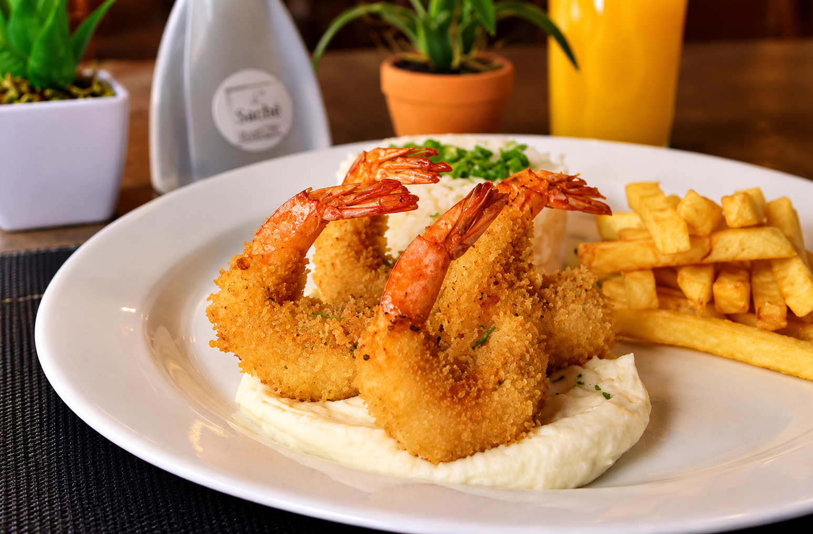

SABOR QUE CONVIDA A VOLTAR
Uma boa refeição
Uma boa refeição
faz o momento.
Descubra sabores, escolha seus favoritos e monte seu pedido.
Explorar cardápio ↗NATAL · RIO GRANDE DO NORTEBOA COMIDA, BOA EXPERIÊNCIA
SADOCHE RESTAURANTE ✳ NATAL / RN
Seu momento
merece bom sabor.
Um espaço para apreciar uma boa refeição, com opções que passam pelo buffet, churrasco, pratos com frutos do mar e muito mais.
Conheça as opções →VariedadeOpções para diferentes gostos
Comida de verdadeUma experiência para aproveitar
Seu pedidoMonte sua seleção pelo cardápio

UM CONVITE AO BOM APETITE
Seu próximo
Seu próximo
favorito pode
estar aqui.
Escolha seus pratos, monte seu carrinho e envie os detalhes pelo WhatsApp.
Ver opções do cardápio ↗ESTAMOS AQUIVenha conhecer
Venha conhecer
o Sadoche.
ENDEREÇO
Rua Jornalista Djair Dantas Pereira de Macedo, 1425
Lagoa Seca · Natal/RN · CEP 59022-370
HORÁRIO INFORMADO
Falar pelo WhatsApp ↗
Todos os dias, das 11h às 15h
Confirme o funcionamento antes de visitar.